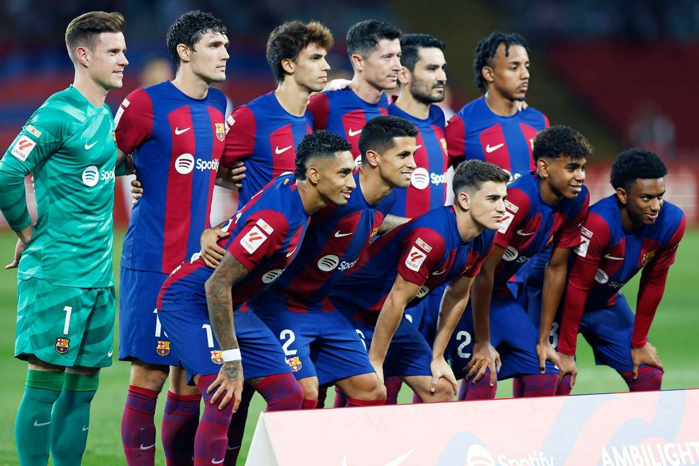

Barcelona

Em 1899, Joan Gamper, um suíço, decidiu introduzir o futebol em Barcelona, montando um time. O clube foi oficialmente fundado no dia 29 de novembro de 1899.O
Cresceu cada vez mais, ganhando títulos como a Copa Macaya em 1902, a Copa Pirineus em 1910 - 1912..
O Barcelona FC construiu seu primeiro estádio em 1909, com capacidade para 6.000 pessoas.
Durante a década de 1920, a fama e o sucesso do time aumentou. Eles ganharam o primeiro Campeonato da Liga na temporada de 1928 - 1929. Com a nova popularidade do clube, foi necessário construir um novo estádio. Em 1922, o estádio ‘Les Corts’ foi construído, com capacidade para 22.000 pessoas.
